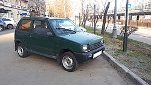

«городской автомобиль» – это очень маленькие авто, которые идеальны для передвижения по тесным дорогам и улицам мегаполисов. Основные сильные стороны «сверхкомпактов»: манёвренность, легкость парковки, топливная экономичность…
Городской автомобиль («A-класс», «Сегмент А», «Супермини»), как правило, является четырёхместным, и имеет длину не более четырёх метров. Двигатель практически всегда расположен спереди и приводит в движение передние колёса
